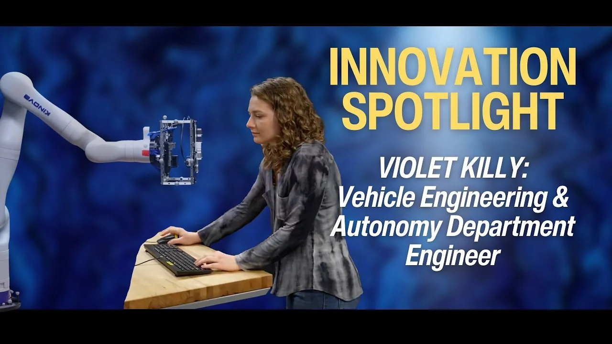
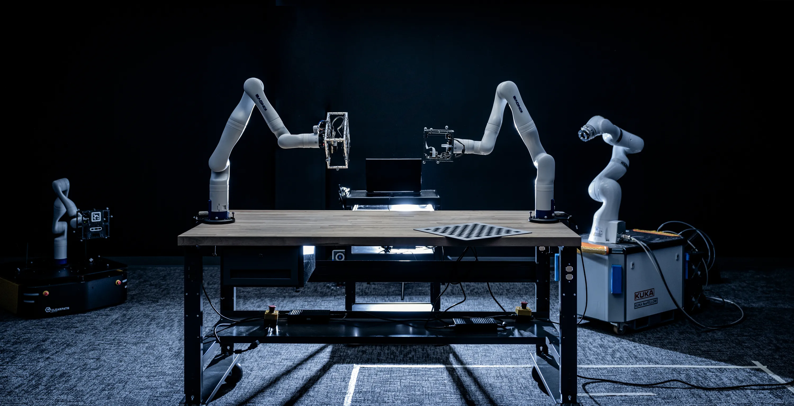
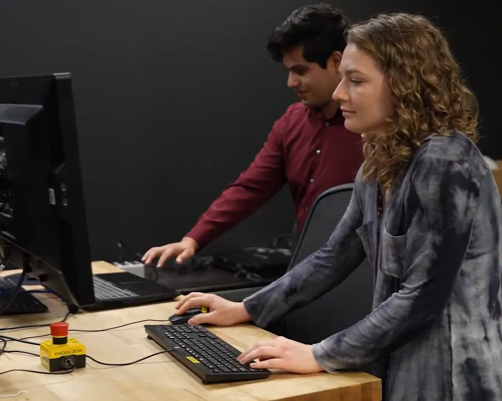
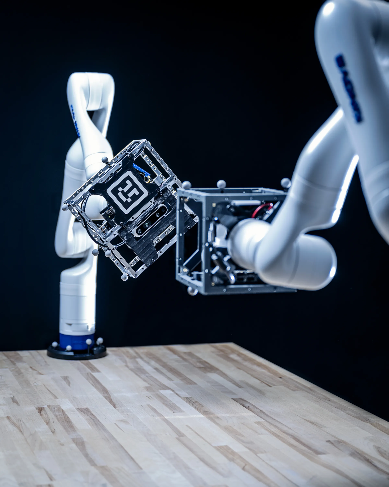
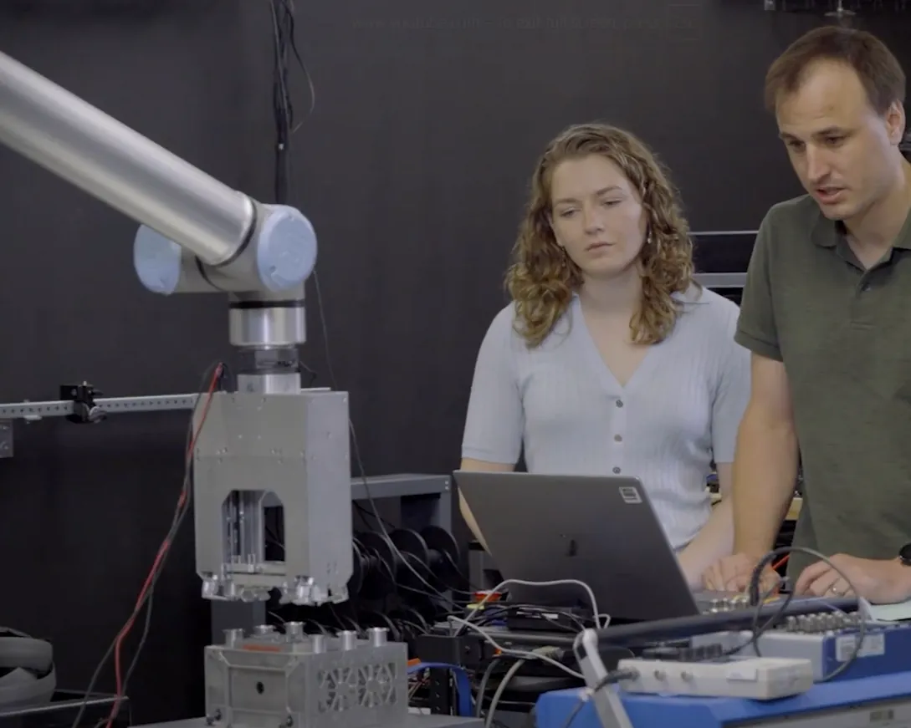
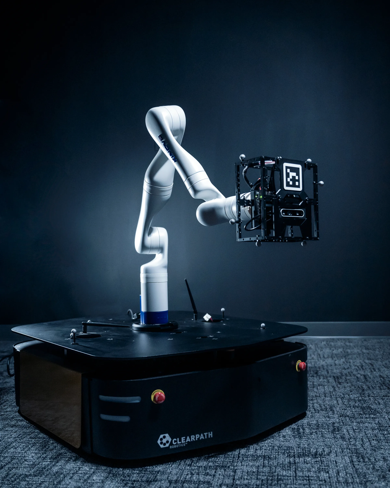
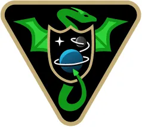
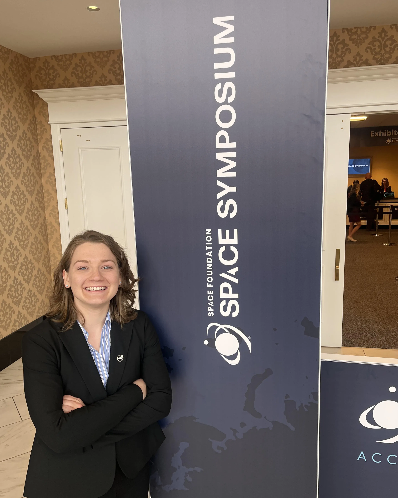

Collaborative and Autonomous Vehicle Ecosystem (CAVE)
Member of Technical Staff | The Aerospace Corporation

Overview
As a Member of Technical Staff in the Vehicle Autonomy & System Trust Department, I develop robotic testbeds, digital twins, and autonomy infrastructure for the Collaborative and Autonomous Vehicle Ecosystem (CAVE) Lab. CAVE combines robotics, simulation, representative flight hardware, and motion capture into a hardware-in-the-loop environment for evaluating next-generation autonomous space systems.
My work focuses on bridging the gap between simulation and real hardware—building experimental platforms that enable trusted testing of spacecraft autonomy, AI, and on-orbit servicing technologies.
The Aerospace Corporation recently featured my work and the CAVE Lab in a spotlight video:
What is CAVE?
CAVE is a system-of-systems integration laboratory designed to evaluate advanced space technologies in realistic mission scenarios. By combining physical robots, digital twins, motion capture, ROS, and high-fidelity spacecraft simulation, the lab provides a proving ground where emerging technologies can be tested, refined, and accelerated toward operational readiness.

What I do
- Develop hardware-in-the-loop autonomy testbeds
- Design digital twin architectures
- Integrate robotics, sensors, and simulation
- Build ROS and Python-based software infrastructure
- Prototype trusted AI workflows
Featured Projects
Hardware-in-the-Loop CubeSat Testbed
Challenge: Develop a robotic laboratory platform capable of emulating spacecraft rendezvous, proximity operations, docking (RPOD), and in-space servicing (ISAM) mission scenarios

My Contributions
- Developed ROS and Python scripts for command and control of Kinova 7DOF robotic manipulators
- Integrated VICON motion capture for gathering sub-mm position and orientation data
- Built closed-loop tracking and rendezvous demonstrations using flight-like Attitude Control Boards and astrodynamics simulations
- Performed fiducial marker trade studies
- Integrated AI-based fault detection experiments
- Developed visualization tools for operators and researchers
- Constructed simulation environments in ROS and Gazebo
Visualization Dashboard

Built a ROS/Python visualization tool that unified:
- Robot state estimation
- Digital twin simulations
- ML model confidence metrics
- Training datasets
- System error metrics
- Sensor and camera feeds
into a single operational view used during development, debugging, and customer demonstrations.
Multi-Vehicle Autonomous Testbed
Challenge: Expand the original tabletop spacecraft testbed into a mobile multi-vehicle platform using Clearpath Ridgeback omnidirectional rovers

My Contributions
- Coordinated a four-person integration team
- Defined simulation and hardware milestones and planned low-level control architecture
- Performed hardware validation experiments
- Designed emergency-stop relay interface connecting robotic manipulators to the rover safety system
- Presented monthly updates and highlights to senior leadership and customer stakeholders
Basilisk integration
Overview: To further bridge the gap between simulation and hardware, my team integrated an open-source astrodynamics simulation software called Basilisk – from the folks at CU Boulder’s AVSLab. Basilisk provides a high-fidelity digital representation of spacecraft states, sensor data, and orbital dynamics, while our robots reproduce the resulting motion in the lab to emulate on-orbit behavior. This allows us to test autonomous spacecraft behaviors in a controlled environment that closely mirrors real mission conditions.

My Contributions
- Developed servicer client rendezvous mission simulation scenarios
- Extended Monte Carlo capabilities to enable systematic variation of vehicle initial conditions and visualization of performance across hundreds of runs
- Integrated simulation tools with lab hardware and ran data collection experiments and demonstrations
Technical Highlights
Robotics + Hardware
- ROS + Gazebo
- Manipulators (Kinova, Universal Robotics)
- Rovers (Clearpath)
- VICON Motion Capture
- NVIDIA Jetson
- 3D Printing
- Electronics Integration and Debugging
Software
- Python
- C++
- OpenCV
- MATLAB
- Linux Development
- Git Version Control
- Docker Deployment
Awards and Honors
- Team Achievement Award (2025): Contributed to a Technology Readiness Level (TRL) bootcamp that combined innovation assessment, technical guidance, and laboratory access to accelerate government adoption of emerging commercial technologies
- Team Achievement Award (2024): Launched a division‐wide mentorship program connecting 70+ participants across departments to strengthen professional development and networking
- Space Symposium (2024): Selected as one of five new-generation ("New Gen") employees from across the company to attend the 39th annual Space Symposium in Colorado Springs. Preparation included one-on-one meetings with all 16 members of the Aerospace executive team.
- Spot Award (2023): Recognized for providing effective leadership in supporting an external review of company‐wide autonomy strategy and portfolio; coordinated technical content from senior engineers and directors to ensure consistency and clarity
